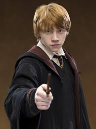

Important Persons About Harry Potter

Ron Weasly
Ron Weasley became Harry's best friend
during their first year at Hogwarts.
Hermione Granger
As Harry himself described, Hermione was one of two of his best friends,
akin to a sister. It could be
further said she was like his older sister,
protective and always trying to keep him in line.

Albus Dumbledore
It was definitely closer than your average teacher/student professional relationship,
but their bond was that
of a familial one.
Dumbledore cared deeply for Harry, and Harry in turn viewed Dumbledore as a mentor or
grandfatherly figure in his life - basically one of the many parental figures he had.